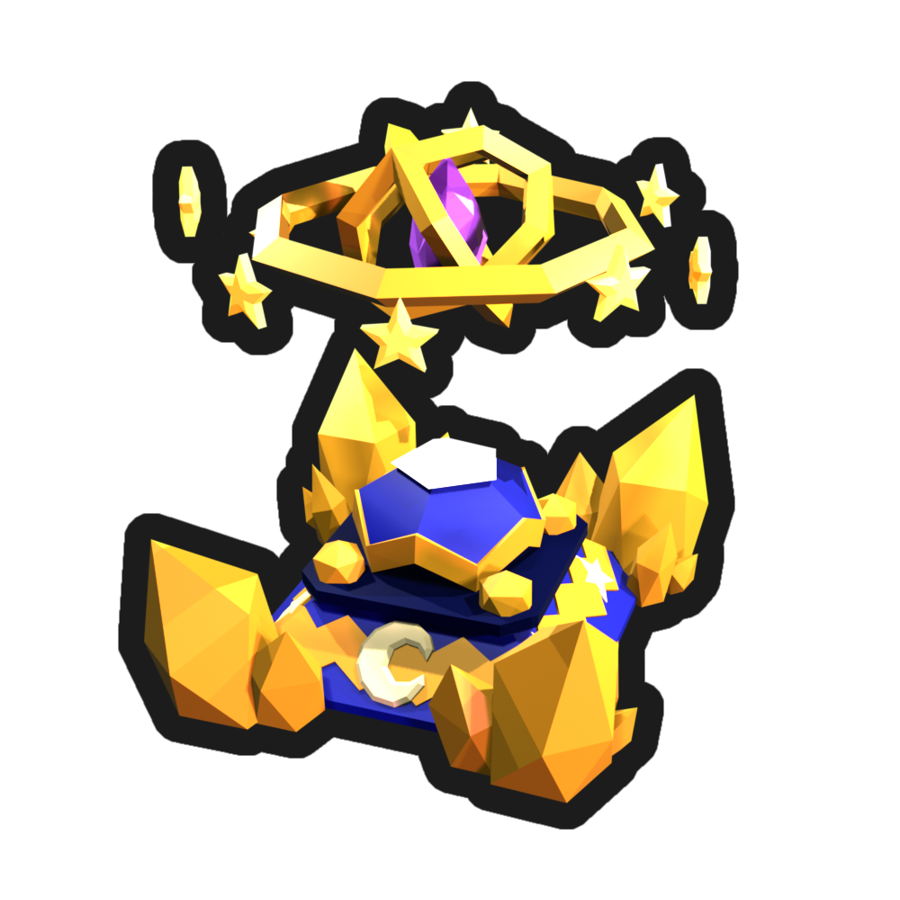

Lunar Minigame
The Lunar Minigame is a time trial that can only be started at night. It costs 1 Lunar Ticket to begin, and once started you have 5 minutes to complete as many tasks as possible.

How It Works
- 1 Get a Lunar Ticket and wait until it turns night in-game, since the Lunar Altar only accepts entries after dark.
- 2 Interact with the Lunar Altar and spend your ticket to begin the trial.
- 3 A random task is assigned from the pool below. Complete it as fast as possible to receive the next one. You have 5 minutes total.
- 4 Each completed task gives you 1 point.
- 5 You start the trial with 5 free reward rolls, and earn +1 roll for every point you get.
- 6 Every point also increases your luck by 20%, improving your odds at rarer rewards.
- 7 When the timer ends, all your rolls are exchanged for rewards from the pool below. If you roll the same reward more than once, the amounts stack.
Task Pool
During the trial, tasks are picked at random from the pool below. Each
task's amount is randomized within its range, so no two runs ask for
exactly the same thing.
| Task | Amount Range |
|---|
Rewards
At the end of the trial, each of your rolls is exchanged for a random
reward from the pool below. As the more tasks you complete the more
common rarer items get you can also insert your tasks completed in the
text box below.
| Reward | Amount | Chance |
|---|